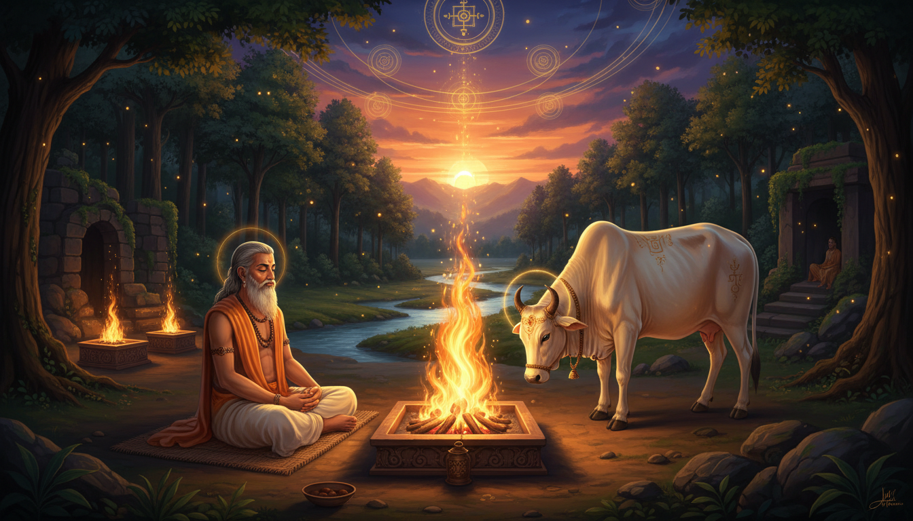

Most remedies in this tradition begin with something outside you: a gemstone to wear, a mantra to repeat, a fast to keep, a temple to visit on a particular day. Jamadagni's method asks for almost nothing — and then asks for everything.

It asks that you be standing at your fire twice a day, at the two minutes of the day when the sun changes its relationship to the sky. It asks that the offering you pour into that fire carry no anger in it. And it asks that you keep, rather than sell, the one source of abundance you have been given.
That combination is rare, and it is the reason Jamadagni — whose name literally means "great fire" — is worth knowing as more than a footnote in the story of his son Parashurama.
A Note Before You Begin
This article describes a Vedic fire rite (the agnihotra) and a modern, safe adaptation of it. Two cautions before anything else.
Fire safety. The rite involves a real flame, ghee, and smoke. Use a stable, non-combustible surface, never an enclosed room with fabric or paper nearby, never a balcony or stairwell, and keep water and a metal lid within arm's reach. Do not attempt this during a fire ban, in high wind, or while under the influence of alcohol or medication. Smoke is a genuine respiratory irritant — if you have asthma, COPD, or a pregnancy-related sensitivity, use the water-only version described below and skip the ghee.
Scope. Nothing here is a substitute for medical, psychological, or legal advice. The astrology sections are traditional timing frameworks, not causal claims; a difficult Saturn transit is a prompt for discipline, not proof that a planet produced a symptom.
Cultural and ritual honesty. The full śrauta agnihotra is a brahminical rite with strict rules about who may make the fire pot, who may milk, and which mantras may be spoken. It is not yours to improvise, and it should not be taken from a text and performed by someone who has not been taught. What follows separates clearly between what the sources record, what a modern adaptation adds, and what is offered as interpretation.
The Man Named Great Fire
Jamadagni (जमदग्नि) is described as a descendant of the sage Bhrigu, himself one of the Prajapatis created by Brahma. He is counted among the Saptarishi — the seven great seers — of the seventh and current age of Manu, alongside Kashyapa, Atri, Vashistha, Vishvamitra, Gautama and Bharadvaja. The Vedas themselves were revealed, in the traditional account, to the rishis of the first manvantara; Jamadagni is named among the receivers.
His birth arrives already carrying a debt. According to the Bhāgavata Purāṇa, the sage Richika was commanded by King Gadhi to fetch a thousand white horses with black ears as a bride-price, and in the course of the marriage Richika prepared two portions of milk boiled rice for his wife Satyavati and for Satyavati's mother — one charged with the Brahma mantra, the other with the Kshatra mantra. Satyavati's mother asked her daughter to swap the two bowls. When Richika learned of it, he pronounced a division of destinies: the child born of his mother-in-law would be a great brahmin, but his own son would be an aggressive warrior who would bring a bloodbath to the world. Satyavati prayed to have the outcome amended, so that her son would be born the brahmin and her grandson the warrior. That is how Jamadagni was born a sage, and how his youngest son became Parashurama.
This is the first structural clue to his method. Jamadagni's life begins with a deliberate rearrangement of an inherited pattern — not a rejection of the debt, but a precise relocation of it. Whatever else he is doing, he is working with the grain of what was assigned, not against it.
He studied the Vedas hard and became erudite in them. He is also said to have acquired the science of weapons without any formal instruction, guided only by his father; the Aushanasa Dhanurveda — a lost text — is a conversation between Jamadagni and the asura teacher Ushanas on the exercises of warfare. He received the celestial bow Sharanga from Richika. He travelled to holy sites, reached the palace of King Prasenajit of the Solar dynasty, and married the king's daughter Renuka. They had five sons — Ṛumaṇvān, Suhotra, Vasu, Viśvāvasu, and Rāma, later known as Parashurama — and practised tapasya together on the banks of the Narmada.
Two facts from this section matter for everything that follows. First, he was both a rishi and a warrior, and his lost treatise is a manual of warfare. Second, his cow was not a pet; it was the working foundation of a hermitage.
The Cow That Would Not Be Sold
The story that makes Jamadagni memorable is the theft of his cow.
The thousand-armed Haihaya king Kartavirya Arjuna came to the hermitage, and Jamadagni served him a feast offered by the divine cow Kamadhenu. The king's minister, Chandragupta, then offered ten million cows, or even half the kingdom, to purchase her. Jamadagni refused. Chandragupta and his men took the cow by force. The rishi, who loved her, pursued the party through the forest rather than accept the loss. Infuriated at his defiance, the minister struck him down and carried Kamadhenu to the king's capital, Māhiṣmatī.
Renuka searched for her husband and found him almost dead in a pool of his own blood. Parashurama and his disciple Akṛtavraṇa found her; she beat her breast twenty-one times; and Parashurama resolved to travel the world twenty-one times and destroy the kshatriya kings he could find. When Jamadagni was about to be cremated, the sage Shukra arrived and restored him to life with the Mṛtasañjīvanī mantra. Parashurama and Akṛtavraṇa went to Māhiṣmatī, met Kartavirya Arjuna and his forces at the gates, slew them, and brought the divine cow home. Jamadagni sent his son to penance at Mahendragiri to cleanse his sins.
Then, while Parashurama was away, Shurasena, a son of Kartavirya Arjuna, beheaded Jamadagni at the hermitage and carried off his head so that he could not be resurrected again. Parashurama and the other disciples cremated him, and Renuka performed sati.
The Purāṇic versions vary, and the variations are themselves instructive. The Padma Purāṇa has Kamadhenu defeating the king's army by her own power and flying off to heaven, after which the enraged king kills Jamadagni. The Brahmāṇḍa Purāṇa has her create a great city by her own power to house the army. The Brahma Vaiṣvārta Purāṇa is the strangest: there the celestial cow, called Kapila, produces weapons and an entire army, instructs her master in martial arts when the king challenges him, and Jamadagni leads that army and defeats the king several times — each time sparing his life — until the king finally kills him with a divine spear granted by Dattatreya.
Read across the versions, the constant is this: the cow was never converted into money, and the cow was never successfully taken by force. Her value is not measured in the transaction. That is the whole point of the story, and it is the reason a remedial astrologer should not be eager to sell anything off.
Now let us be precise about who Kamadhenu is, because this is where the story stops being about a cow.
Kamadhenu (कामधेनु), also Kamaduh and Kamaduha, means literally "the cow from whom all that is desired is drawn" — the cow of plenty. Because her milk and the ghee made from it are integral to Vedic fire sacrifice, she is also called Homadhenu, the cow from whom the oblations are drawn. The Indologist Madeleine Biardeau notes that Kamadhenu is in effect the generic name of the sacred cow in Hindu tradition, regarded as the source of all prosperity. She is held to be a form of Devi, closely identified with the fertile Mother Earth, who is herself described as a cow in Sanskrit. All the gods are said to dwell in her body. In iconography she appears as a white cow with a woman's head and breasts, the wings of a bird and the tail of a peacock, or as a white cow containing various deities within her body; she is frequently depicted accompanying Dattatreya, who holds her in one hand.
Her genealogy makes her a cousin of the stars. The Anuṣāsana Parva has Surabhi born from the belch of Prajapati Daksha after he drank the amrita that rose from the churning of the ocean; in the Purāṇas she is the daughter of Daksha and the wife of Kashyapa, mother of cows and buffaloes. The Anuṣāsana Parva also has Surabhi given ownership of Goloka, the cow-heaven above the three worlds, after she worshipped Brahma for ten thousand years on Mount Kailash — whereupon the god conferred goddess-hood on the cow and decreed that all people would worship her and her children: cows.
One more detail, small and easily missed. The Rāghuvamsha records that the ancestor-king Dilipa passed by Kamadhenu-Surabhi without paying respect, and incurred the wrath of the divine cow, who cursed him to be childless. His guru Vasishtha advised him to make amends by serving Nandini — Kamadhenu's own daughter — who was in the hermitage. The remedy for the curse was service, not purchase.
The Cream That Tamed a God: Dharma's Test in the Milk Pot
The strangest episode in the whole cycle is the shortest.
In the Ashvamedha Parva of the Mahābhārata, Dharma himself — in the form of Anger — manifested at Jamadagni's ashrama. The rishi had just milked his cow and put the milk in a pot. Anger crept into the pot and drank it. Jamadagni remained calm. Then Dharma appeared to him as a brahmin and blessed him with the boon that he would always be righteous in the future.
Read plainly: a god slipped into his offering, consumed it, and found nothing there to trouble him.
Practically, this is the hinge of the entire method. In the śrauta agnihotra, the quality of what you pour is not incidental. The fire receives ghee and milk that the household produced, milked that morning, from a cow that was fed and cared for. Dharma's test says that the offering carries the state of the person making it. If the milk is thin, the offering is thin. If the mind is full of heat, the offering is full of heat — and a fire that is fed heat will return it.
For a remedial astrology audience, this is the most directly usable thing in the story. The traditional framing of an afflicted planet is that it expresses through the native's own temperament — through anger, fear, greed, pride — and that a remedy which changes the offering without changing the temperament has changed nothing. Jamadagni's blessing was not given for a ritual he performed. It was given for a disposition he did not display while a god was drinking his milk.
The Fire That Ran on Sunrise and Sunset
Now the mechanism, in as much detail as the sources give.
The agnihotra is a yajña of offering ghee into a consecrated fire, and in the Śrauta tradition it includes a twice-daily heated milk offering. It was, in the historical Vedic religion, the simplest public rite there was: the head of every brahmin and vaishya family was required to conduct it twice a day. The rite is performed twice daily, right before or after sunrise and after sunset, or at the appearance of the first night star. The morning and evening versions differ in their mantras.
The three fires. There is an eastern offertorial fire, the āhavanīya, lit in a square pit; a western fire, the gārhapatya, lit in a circular pit, representing the householder's own fire; and a southern fire, the dakṣiṇāgni.
The four priests and the four Vedas. Vedic sacrifices are typically performed by four officiants: the adhvaryu, responsible for the physical details of the sacrifice, who chants the Yajurveda; the hotṛ, who recites the Rigveda; the udgātṛ, who sings hymns of the Samaveda; and the brahman, who supervises the ceremony and recites the Atharvaveda, correcting any errors. The complete Veda is thus physically present in the rite.
The tools. A ritual poker, a pot (the agnihotrasthālī), a spoon (the sruva), and a ladle (the agnihotrahavanī).
The cow and the calf. When the sacrificial area has been cleaned and the fire lit, a cow is brought to the grounds. The milker — an ārya and not a śūdra — recites mantras before her, then brings the calf to the right side of its mother before beginning to milk. The milk is kept in the agnihotrasthālī, which itself can only be made by an ārya.
The sequence. When the milking is complete, the adhvaryu pours water around the three fires, then boils the collected milk on coals gathered from the gārhapatya. He draws the milk into the ladle and pours it onto the āhavanīya twice — first while reciting mantras, and the second time silently, as an offering to Prajapati. When the libations are complete, the ladle is cleaned with darbha grass and refilled with water; it is heated on the āhavanīya with further mantras and poured onto the altar as an additional libation. In certain versions of the rite (though not in the Taittiriya Brāhmaṇa), a blade of grass is then offered to the āhavanīya. Finally, the adhvaryu sips some of the leftover water, recites the closing line — rendered in the sources as "From Ṛta I have found Satya" — and pours the water on his head.
The mantras, exactly. At sunset the practitioner says:
Agnaye svāhā Agnaye Idam na mama — अग्नये स्वाहा इदम् अग्नये न मम — "This is for Agni, svāhā. This is for Agni, and not for me."
He offers the first portion of rice or ghee into the fire as soon as svāhā is spoken. Then:
Prajāpataye svāhā Prajāpataye idam na mama — प्रजापतये स्वाहा प्रजापतये इदम् न मम — "This is for Prajapati, svāhā. This is for Prajapati, and not for me."
And the second portion is offered as soon as svāhā is spoken. The evening milk offering carries its own line:
Agnir jyotir jyotir agniḥ svāhā — अग्निर् ज्योतिर् ज्योतिर् अग्निः स्वाहा — "Agni is the light. The light is Agni, svāhā."
In the morning, Surya is substituted for Agni:
Sūryo jyotiḥ jyotiḥ sūryaḥ svāhā — सूर्यो ज्योतिः ज्योतिः सूर्यः स्वाहा.
That substitution is the single most astrology-relevant detail in the entire rite, and it is easy to miss: at dawn, the fire is addressed as the Sun. The same physical act of offering is aimed at a different deity depending on where the sun is. This is a ritual built around solar position, not around the calendar.
Nitya and kāmya. Performance of the agnihotra as a purely ritual obligation is called nitya; performance with a special purpose is called kāmya. The Kātyāyana Śrautasūtra advises devotees to sacrifice with milk to obtain cattle or a position in heaven, and the sources list what different materials were thought to purchase: a village with rice gruel, strength with plain rice grains, refined senses with curds, and *"sharpness" or spirit (teja) with ghee*.
What it was taken to mean. Paul-Émile Dumont, in his study of the agnihotra in the Taittiriya Brāhmaṇa, characterised the rite as a fertility charm and as a solar charm which symbolically preserved and created the sun at nightfall and sunrise. The Mahābhārata tradition adds that Prajapati creates Agni and offers the sweat of his brow — which became ghee — or his eye, after hearing his own voice command him to sacrifice, thereby creating Surya. Another version holds the agnihotra to be a condensed form of the thousand-year sacrifice that Prajapati and the devas performed to gain divine power.
Modern forms. A simplified variant was popularised in the mid-twentieth century by Gajanan Maharaj and groups working with Homa Therapy: ghee and brown rice offered into a single fire lit in a copper pyramid-shaped brazier with cow dung and additional ghee. The temple of Agnishala has maintained the Vedic agnihotra tradition since the twelfth century, and in the Taittiriya Brāhmaṇa the rite is the most elementary public sacrifice in the tradition. For honesty's sake: a 2007 study by Sylvia Kratz and Ewald Schaung found that while agnihotra ash possibly increased soil phosphorus, levels were the same whether the ceremony was performed at the prescribed times with mantras or not. The physical effect is unproven; the discipline is not in doubt.
The One-Time Fire Initiation Nobody Talks About
In the North Malabar region of Kerala there is a rite called Agnihomam, practised by the Thiyyar community, which is not the daily agnihotra at all. Where the standard Vedic agnihotra consists of daily oblations into a consecrated fire, the Agnihomam is a *one-time, rigorous rite of passage that transitions a warrior (Chekon) into a divine or semi-divine status (Divyan). Following its completion the initiate is granted the Poonool (sacred thread), the Yogapattam, and the Mudra* by the Yogeeswarans.
This is the rite that belongs to Jamadagni.
Consider the shape of the man. He was a rishi who attained the śrauta learning of the Vedas, who conducted the twice-daily fire with the four Vedas present in it, who acquired the science of weapons without formal instruction, whose lost treatise is a conversation about the exercises of warfare, who shot arrows into the sky until the sun god came to him, and whose own son was the great warrior Parashurama. The Agnihomam is a fire initiation for a warrior — one fire, one passage, one irrevocable change of status. Jamadagni carries both halves of this in a single life: the daily discipline of the householder-fire and the one-time consecration of the warrior-fire.
If you are looking for the genuinely lesser-known ritual in this story, this is it. It is also the one that most clearly maps onto the logic of remedial astrology, where the decisive intervention is not the daily offering but the single correct act performed once, at the correct moment, in the correct direction.
The Achievement in One Line
Jamadagni achieved the twice-daily solar fire, the cow that could not be bought, and a mind that could sit perfectly still while a god drank his offering.
Everything else follows from those three things being held together.
The Hidden Correspondences
The material above contains several correspondences that reward careful attention. They are stated here as traditional mythic relationships, not as claims that Jamadagni taught Jyotiṣa — he did not; his discipline is ritual, and Jyotiṣa is a separate science.
The Cow and the Stars Share a Father
Surabhi-Kamadhenu is described as the daughter of Daksha. The nakshatras are also described as daughters of Daksha, and as the wives of Chandra, the Moon. So the cow of plenty and the twenty-seven lunar mansions are siblings in the myth — the cow that gives what is desired, and the twenty-seven divisions of the sky through which desire is timed.
This is a richer correspondence than it first appears, because Daksha's story contains the first recorded failure of attention in this material. Chandra neglected his other twenty-six wives in favour of Rohini, and his father-in-law cursed him with leprosy and proclaimed that the Moon would wax and wane each month. The nakshatra is the framework in which that curse was made visible.
The Four Quarters Are Held by the Cow's Own Daughters
The Udyoga Parva states that Surabhi inhabits Rasatala in Patala and has four daughters — the Dikpalis — the guardian cow goddesses of the heavenly quarters: Saurabhi in the east, Harhsika in the south, Subhadra in the west, and Dhenu in the north.
So the cow of plenty's daughters hold the four directions. This is the hinge between Kamadhenu's story and the directionally-organised practice of Jyotiṣa, and it is worth setting beside the standard eight:
| Direction | Dikpāla | Deity | Planetary correspondence in Jyotiṣa tradition |
|---|---|---|---|
| North | Uttara | Kubera | Guru / Brihaspati |
| South | Dakṣiṇa | Yama | Shani |
| East | Pūrva | Indra | Surya |
| West | Paścima | Varuna | Shukra |
| Northeast | Īśāna | Īśāna | Guru / Vishnu |
| Southeast | Agni-dik | Agni | Bhauma / Mars |
| Northwest | Vāyu-dik | Vāyu | Budha / Mercury |
| Southwest | Nirṛta-dik | Nirṛta | Shani / Ketu |
The final column is a modern alignment framework, not something the Dikpāla list itself asserts. But the structural point is genuinely traditional: the guardians of the directions have always been a coherent set, and in Jyotiṣa the directions are the same directions the planets are assigned to. This is why an oblation made toward a direction is a meaningful remedy in the classical systems, and why the direction of the afflicted lord is worth more than the day of the week it happens to fall on.
The Cow That Offers Protection to the One Who Cannot Fight
One line in the sources is worth pulling out because it describes a remedy structure most people have never considered. The cow, it is said, offers the brahmins — who are prohibited from fighting — protection against abusive kings who try to harm them.
Here is a remedy in a tradition with no weapons for its practitioners: not a counter-attack, not an appeal to a stronger king, but the presence of a protected, prosperous, non-violent being at the centre of the household, whose ordinary abundance makes the household worth attacking and worth not destroying. The cow's protection is not its power. It is the fact that the cow is there.
Applied to a chart, this is the logic of the well-placed fourth house, the benefic in the second, and the accumulated dignity of a family that is not at war with anyone. It also names the strategy for anyone who has been told they must fight: you are not going to fight. You are going to be worth protecting.
The Head That Was Taken
The final and darkest detail is that Jamadagni was restored by Shukra's Mṛtasañjīvanī mantra at the cremation ground — and then, later, permanently undone when Shurasena took his head away so that he could not be resurrected again.
It is worth stating plainly that this is also the story of the method's limits. The daily rite, the cow, the discipline — all of it depends on the head being present, on the offering being received by a whole and recognisable recipient. The one time Jamadagni was permanently stopped, he was stopped by removing the part that could receive. Whether one reads that as theology or as psychology, it is a fair description of what happens when a remedy is performed but its central participant has been removed from the picture.
A Safe Modern Version of the Method
Here is a graded practice, offered in the spirit of the Gajanan Maharaj simplification rather than as a reconstruction of the śrauta rite. This is a modern adaptation. It is not the Vedic agnihotra, and it should not be described as one. It requires no priest, no cow, no consecration, and no claim to authority over the original.
Tier 1 — The Two Minutes
Stand outside, at the edge of your home or a safe open area, at the two times: shortly before or after sunrise, and shortly after sunset. Hold nothing. Do nothing.
For thirty seconds, notice where the light is coming from and where it is going. Then say, silently:
This is not for me.
That single line is the svāhā structure of the whole rite, and it is the part that survives translation into any language and any household. You are not asking the fire for anything. You are setting down what you have, and naming who it belongs to.
The morning and evening are not interchangeable, and the reason is the substitution of Surya for Agni. In the morning, the light is rising and the deity addressed is the Sun. In the evening, the light is setting and the deity addressed is Agni. Say, in the morning: "Surya is the light. The light is Surya." In the evening: "Agni is the light. The light is Agni." That is the ritual's actual solar geometry, kept in its simplest possible form.
Tier 2 — The Offering
You need a small heatproof vessel, a flame, and one thing to offer.
Begin with water only. Warm water in a small steel or brass vessel, offered into the flame, or poured out onto the earth beside it with the same words. Water is the most forgiving medium and it is enough to establish the rhythm.
If you go further, the traditional material is ghee, and the modern simplified form uses ghee and brown rice into a single fire in a copper brazier. Vegetarian alternatives exist and are entirely appropriate for a home adaptation — a spoon of melted ghee is ideal, but a small quantity of rice, a few grains of sugar, or a spoonful of oil will serve the structure, because the structure is the giving away, not the substance.
Practically:
- Offer once for the Sun and once for the one who sustains, in the same breath as the words. In the morning, offer to Surya; in the evening, to Agni.
- Offer a second time, silently. This is the second libation to Prajapati, and it is the one nobody performs. It is the most valuable part of the rite precisely because it is the least noticed.
- If you have grass or a green blade — a single one is enough — offer that last.
Tier 3 — The Four Directions
Once the two daily points are established, add the directional layer. This is where the cow's four daughters become usable.
Sit or stand at the centre of your home or your practice space. Offer a small quantity of water, rice or ghee toward each of the four quarters in turn, east, south, west, north, naming the Dikpāla of that direction: Saurabhi in the east, Harhsika in the south, Subhadra in the west, Dhenu in the north.
Then ask, honestly, which direction your chart makes hardest. In Jyotiṣa tradition the planets hold the directions — Shani in the south, Surya in the east, Shukra in the west, Guru in the north. If a period of difficulty is associated with a particular lord, give that lord the longest offering of the four. Not because the planet is listening, but because the act of deliberately turning toward your own most difficult direction, and offering something there without resentment, is the practice. Jamadagni faced a king who could take whatever he wanted by force. The remedy was not to avoid the direction of the threat. It was to serve the cow in it.
Tier 4 — The Anger Test
This is the tier that changes everything, and it is the one most people will skip.
Before you light the fire, ask the question that Dharma asked in the milk pot: is there anything in this offering I would rather not give away?
If the answer is no — proceed. If the answer is yes, do not perform the offering. Sit with it instead.
Dharma drank Jamadagni's milk and found nothing to fear. Jamadagni received his blessing for what he did not do while being tested. You do not need a god to drink your milk. You already know what your own milk tastes like.
And the reverse is the diagnostic value. If you notice during the offering that you are anxious about whether it "worked," or bargaining for a result, or comparing your practice to someone else's — that is Anger in the pot, in the form it actually takes in modern life. The rite is doing its job. That is the moment to stop the offering and simply pour water.
A Ten-Step Working Protocol
- Fix the two times. Same window each day, tied to your actual sunrise and sunset, not to a fixed clock hour. Consistency of relation to the sun matters more than clock precision.
- Prepare one safe place. Non-combustible surface, water and a metal lid to hand, no fabric nearby, ventilation adequate.
- Set the intention first. Before anything else, establish that the offering is not a transaction. Say: "This is not for me."
- Name the deity correctly. Surya in the morning, Agni in the evening. Do not swap them; the substitution is the point.
- Offer once with words, once in silence. The silent second libation is the one that carries the weight.
- Check the pot. Before offering, notice any resentment, bargaining or anxiety. If present, substitute water and stop.
- Keep it small and consistent. A daily offering of almost nothing beats a large offering performed irregularly. The rite is nitya before it is ever kāmya.
- Add the four directions when the daily rhythm holds. East, south, west, north — naming the Dikpāla of each, giving the longest offering to your most difficult direction.
- Keep the cow. Whatever you have that sustains you — a practice, a craft, a relationship, a holding — do not sell it to solve a crisis. The minister offered half a kingdom and Jamadagni refused. Service to what you already have is the remedy; liquidation is the opposite of the remedy.
- Close with the line. "From Ṛta I have found Satya." Let it mean: I have found the true thing in what is true. Then end the day normally. Do not bargain.
Using the Method in a Remedial Astrology Calendar
Everything in this section is a modern alignment framework, built here from Jamadagni's own record. It is not a remedy that Jamadagni prescribed for a planet, and it should not be attributed to him as one. He left no horoscope. What he left is a rite with a precise solar geometry, a cow that was not for sale, and a temperament that did not change under pressure — and that combination is what a remedial calendar can be built around.
When Saturn Is the Dominant Test
Classical Saturn is associated with delay, endurance, discipline, fear of failure and the consequences of shortcuts. The agnihotra's own logic is Saturnian before it is astrological: it is the simplest possible rite, performed twice a day, by every householder, with no display and no audience.
Use nitya discipline, not kāmya intensity. Keep the two daily points for at least twenty-one days — a period that is traditional, memorable and, if you like, resonant with Parashurama's twenty-one journeys. Add one act of Saturnian repair: finish a delayed task, repair something neglected, or sit with a duty you have been avoiding. The rite teaches the not-for-me; the repair teaches the responsible.
When the Sun Is Under Pressure
The morning rite already addresses Surya, and the substitution is built into the tradition rather than added by us. On a solar-afflicted period — a difficult Sun transit, a solar eclipse, or a chart with the Sun badly placed — make the morning offering the substantial one and the evening one the water offering. The asymmetry is the point: give more to the luminary that is being strained.
Traditional timing practice in Jyotiṣa makes the Sun's position at the moment of sunrise the moment the day itself is judged. The rite is aligned to that moment and to nothing else. Do not add an altar, a direction, or a deity beyond what the sources give. The alignment is already there.
When Rahu or Ketu Disturbs the Compass
Rahu and Ketu are associated with disturbance, illusion, obsessive longing and abrupt change — and, in the traditional image, one direction of the axis is enlarged while the other goes unseen. The cow story is the direct antidote to the Rahu-style move, because it is a story about refusing to liquidate what you have when offered an enormous sum for it.
Practice: identify the one holding in your life that you have been quietly pricing — the thing you would sell if the pressure got bad enough. Name it. Decline to price it. Then offer something toward the direction of the Rahu or Ketu lord, small, with the words.
When a Directional Lord Is Afflicted
The four Dikpali daughters of Surabhi hold the quarters, and in Jyotiṣa the planets hold the same quarters. So when a period is identified with a lord, the direction of that lord becomes the meaningful axis.
Make the directional offering in that order — the afflicted direction last, and given the most. If it is Shani in the south, that is the direction where you will want to give the most, and it will be the most uncomfortable. The obstruction is the point. Turning toward it with an offering and no resentment is the practice. Jamadagni's cow was stolen from him, and his response was to pursue, not to flee; the remedy he eventually found was to be restored and to bring the cow home by force — but the one who never sold her was the one who had the standing to do so.
At the Nakshatra Boundaries
The nakshatras are Daksha's daughters, and Kamadhenu is Daksha's daughter too. Work with the pada — the quarter of a nakshatra — rather than only with the sign, and treat the boundary moments as the times when the suta says something is happening. The cow of plenty and the twenty-seven mansions are siblings; the moon moves through them continuously; a rite that runs on the sun's timing can be noted against the moon's, and the two cycles together are the actual clock of Jyotiṣa.
Use this to record rather than to predict: note the nakshatra pada on which you did the rite and what the day was like. Over a season, that record becomes your own working ephemeris — which is more useful to you than a generic prescription, because it is calibrated to your own life.
At Dawn on the Ashvini Nakshatra
The Ashvins are invoked at dawn, the time of their principal sacrifice, and they are close companions of the dawn goddess Uṣas. The first nakshatra, Ashvini, belongs to them, and they are described as divine horse twins — sons of Surya in the equine form. They are also the physicians, and in the Mahābhārata the Pandava twins Nakula and Sahadeva are their sons.
If you want one window in the year to make this practice count, make it the beginning of Ashvini, at first light, with the morning rite done properly and the four directions offered. It is the dawn that the Vedic calendar itself was built around.
What Jamadagni Means for Your Chart Specifically
- A long Saturn transit or delayed recognition — the two daily points, kept without variation, for a season. Jamadagni's cow was not sold in a week. Neither is a remedy.
- A Rahu–Ketu period of obsessive longing — the unpriced holding. Name the thing you have been valuing in secret, and decline to sell it.
- A Sun placed under pressure — make the morning offering the substantial one. The rite already addresses Surya at dawn; the asymmetry is yours to add.
- An afflicted lord of a direction — offer toward that quarter, last and longest, and do not flinch.
- Chandra and the nakshatra padas — record the pada on which you did the rite, and build your own ephemeris.
- Anger that will not sit down — the milk-pot test, every day, before you offer. This is the tier that actually changes the chart's expression, and it is free.
- A household in conflict — the cow's protection of those who cannot fight. Build the settled, prosperous, non-combustible centre. That is what defends it.
- Interest in genuine tradition rather than decoration — read the Taittiriya Brāhmaṇa agnihotra material and Paul-Émile Dumont's study of it, and read the Ashvamedha Parva episode in the Mahābhārata directly. The value is in the precision, not in the mood.
The Final Word
What Jamadagni actually won was not a title and not a boon. He won a household that could not be raided, a fire that went out and came back every day at the same two minutes, and a reputation for being unshakeable that was tested by a god and found to hold.
Three of the four things in this story are about refusal. He refused the price for his cow. He refused to run from the theft. He refused to be provoked by the thing drinking his milk. Only the fourth is about action — and the action is small, twice daily, and aimed at the sun.
That is a useful shape for a remedy to have. It asks nothing of your circumstances and everything of your composure, it costs almost nothing, and it is tied to a cycle you cannot cheat, because the sun arrives whether or not you are ready.
The last line of the Udyoga Parva account of Surabhi's daughters is that the four Dikpalis hold the quarters, so that nothing is left unguarded. Jamadagni's version of that is simpler. A cow in a courtyard, a fire at dawn, and a man who did not flinch.
—
Sources
1. Jamadagni — Wikipedia — biography, the milk-pot test of Dharma, the boons from Surya, the theft and return of Kamadhenu, the restoration by Shukra, the beheading by Shurasena.
2. Kamadhenu — Wikipedia — etymology, Homadhenu, the cow of plenty, Surabhi and Daksha, Goloka, the four Dikpali daughters, the Rāghuvamsha curse of Dilipa, the protection offered to brahmins, the Brahma Vaiṣvārta Purāṇa martial variant.
3. Agnihotra — Wikipedia — the three fires, the four priests and four Vedas, the tools, the cow and calf, the milk pot, the two libations, the darbha grass and closing line, all mantras with Devanagari, the Surya substitution, nitya and kāmya, the Kātyāyana Śrautasūtra, the Gajanan Maharaj simplification, the Agnihomam of North Malabar, and the Kratz–Schaung study.
4. Dikpala — Wikipedia — the eight guardians with their directions, the Daśa-Dikpāla and Nava-Dikpāla sets.
5. Nakshatra — Wikipedia — the nakshatras as daughters of Daksha and wives of Chandra, Chandra's curse of neglect, the 27 divisions and their padas.
6. Ashvins — Wikipedia — invocation at dawn, the connection with Uṣas, the equine birth of the twins.
7. Daksha — Wikipedia — the fifteen thousand sons, the daughterhood that the nakshatras share.
8. Category:Rishis — Wikipedia — the rishi index in which Jamadagni appears.
9. Paul-Émile Dumont, "The Agnihotra (or Fire-God Oblation) in the Taittirīya-Brāhmaṇa: The First Prapāṭhaka of the Second Kāṇḍa of the Taittirīya-Brāhmaṇa with Translation," Proceedings of the American Philosophical Society 108:4 (1964), pp. 337–38 — JSTOR 985912.
10. David M. Knipe, The Agnihotra (or Fire-God Oblation) in the Taittirīya-Brāhmaṇa (Leiden: E. J. Brill, 1976).
11. Subodh Kapoor, A Dictionary of Hinduism: Including Its Mythology, Religion, History, Literature, and Pantheon (Cosmo Publications, 2004), p. 185.
12. Vettam Mani, Puranic Encyclopedia: A Comprehensive Work with Special Reference to the Epic and Puranic Literature (Motilal Banarsidass, 2015), p. 225.
13. Arthur Avalon (Sir John Woodroffe), The Tantra of the Great Liberation (Mahānirvāṇa Tantra) (1913; Dover reprint, 1972), p. xli — the seven Saptarshis of the present manvantara.
14. Monier-Williams, Sanskrit-English Dictionary (1899), s.v. Surabhi — "fragrant, charming, pleasing, as well as cow and earth."
15. Agnihotra.org — Mantras — the mantra forms as published for the modern simplified rite.